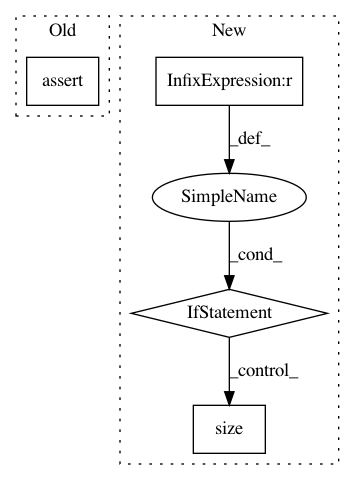

c88688032b3173bb140677e0e4e7b481efd3a5b9,onmt/modules/MultiHeadedAttn.py,MultiHeadedAttention,forward,#MultiHeadedAttention#Any#Any#Any#Any#,28
Before Change
batch2, t_len2, d2 = value.size()
batch3, q_len, d3 = query.size()
assert batch == batch2
assert batch == batch3
assert t_len == t_len2
assert d == self.d_model
def shape_projection(x):
After Change
aeq(batch, batch_)
aeq(d, d_)
aeq(self.d_model % 8, 0)
if mask is not None:
batch_, q_len_, k_len_ = mask.size()
aeq(batch_, batch)
aeq(k_len_, k_len)
aeq(q_len_ == q_len)
// END CHECKS
def shape_projection(x):
b, l, d = x.size()
return x.view(b, l, self.heads, self.d_k).transpose(1, 2) \
.contiguous().view(b * self.heads, l, self.d_k)
In pattern: SUPERPATTERN
Frequency: 3
Non-data size: 4
Instances
Project Name: OpenNMT/OpenNMT-py
Commit Name: c88688032b3173bb140677e0e4e7b481efd3a5b9
Time: 2017-07-05
Author: srush@sum1gpu01.rc.fas.harvard.edu
File Name: onmt/modules/MultiHeadedAttn.py
Class Name: MultiHeadedAttention
Method Name: forward
Project Name: OpenNMT/OpenNMT-py
Commit Name: 3dc20bc15b767ad60edfc15154b630dbef8b79cc
Time: 2017-12-12
Author: dengyuntian@gmail.com
File Name: onmt/IO.py
Class Name:
Method Name: read_img_file
Project Name: OpenNMT/OpenNMT-py
Commit Name: b5486aaea994960688152e91fbab7699dc04e8c1
Time: 2017-08-14
Author: taolei@csail.mit.edu
File Name: onmt/Models.py
Class Name: Decoder
Method Name: forward